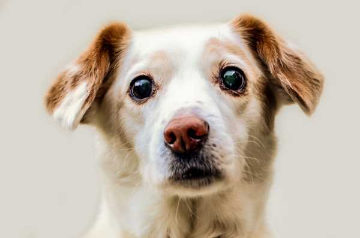

Crianza:
¡Sé consistente!
Clave con cualquier tipo de entrenamiento de obediencia. Cada vez que tu cachorro haga algo deseable (incluso si no es durante una sesión de entrenamiento), recompensalo con elogios entusiastas y un premio ocasional: este estímulo hará que sepa con rapidez lo que está haciendo bien. Cuando haga algo indeseable como cavar un hoyo en el patio dile un "no" fuerte y firme. Atraparlo en el acto y corregir el comportamiento de inmediato es la mejor manera de mostrarle la diferencia entre lo correcto y lo incorrecto. Como en esta ocasión no recibirá un premio; será más sencillo para él saber que su acto no fue adecuado.
Redirige el comportamiento inapropiado
La atención de tu cachorro cuando hace algo inapropiado. Puedes usar un "no" fuerte y firme, o intentar usar un sonido grave como "alto". Cuando te mire, enséñale un comportamiento alternativo aceptable o busca la distracción. Por ejemplo, si lo descubres masticando un zapato, llama su atención y dale un juguete para masticar.
Elogia el comportamiento correcto
Cambie su atención al juguete para masticar, elogia su comportamiento. Usa una voz optimista y aguda para decir cosas como "¡buen chico!". Recompensalo con caricias tranquilas o un regalo si te corresponde. Los perros son bastante inteligentes, por lo que elogiarlo por su buen comportamiento refuerza su intuición y sus buenos modales.
Usa premios
Es una buena idea comenzar el entrenamiento de tu cachorro con un sabroso manjar como recompensa por su buen comportamiento. Con el tiempo, disminuye la cantidad de premios que usas y aumenta la cantidad de elogios verbales y físicos como recompensa. ¡No hay mejor retribución que tu cariño!
Termina con una nota positiva
Finaliza sus sesiones de entrenamiento con una nota positiva. Si tu cachorro no dominaba el comando "quieto” durante esta sesión, regresa a algo que él sepa, como "sentado". Cuando se siente, dale una recompensa y muchos elogios.

Alimentación:
¿Cómo alimentar a tu perro correctamente?
Cada perro es diferente y necesita unos nutrientes y proteínas distintos del otro. Su raza, su edad y tamaño, su actividad y su estilo de vida son factores que influirán directamente a la hora de elaborar una dieta equilibrada para él. Además, la alimentación de nuestra mascota depende exclusivamente de nosotros, y eso – aunque parezca obvio –, supone una gran responsabilidad.
La hidratación es indispensable
La hidratación en los perros, de la misma forma que nosotros, es muy importante. La relación promedio de agua que necesitan es de 60ml por kilo de peso corporal. Esta cantidad deberá aumentar en el caso de tratarse de un cachorro, una hembra lactante, un clima muy cálido o si ha realizado actividad física No olvides cambiarle el agua regularmente, ya que de lo contrario es probable que se alojen bacterias perjudiciales para su salud.
Respeta sus transiciones alimentarias
Si, por cualquier motivo, cambias un alimento por otro, es recomendable que lo hagas poco a poco y progresivamente. Dosifica ambos productos durante una semana y ve aumentando la dosis del nuevo alimento hasta cambiarlo por completo. De esta forma, ayudarás a tu peludo a adaptarse a los nuevos sabores y a digerirlos con facilidad. Así su metabolismo podrá acostumbrarse y se reducirá el rechazo o los problemas digestivos.
Controla las cantidades
Si pudieses medir y pesar de alguna forma la cantidad de comida que das a tu peludo sería ideal. En tal caso, la cantidad adecuada se calcula en función de la necesidad energética diaria y el peso del animal. Controlando las cantidades de alimento que proporcionas a tu peludo le ayudarás a prevenir enfermedades como la obesidad, que provoca muchas otras complicaciones de salud.
Ofrécele una alimentación equilibrada
Es importante que los alimentos que ingiera tu pequeño contengan todos los nutrientes en las cantidades adecuadas en relación a su peso y a su tamaño, su estado fisiológico, su edad e incluso su estado de salud.
Elige el alimento correcto
Los perros tienen que consumir una dieta que contenga todos los nutrientes necesarios para su correcto desarrollo. Asegúrate de que los alimentos que ofreces a tu peludo tengan proteínas, minerales, hidratos de carbono, grasas, vitaminas y antioxidantes.
Utiliza su alimento de forma racional
Para saber cómo alimentar a tu perro correctamente intenta seguir las instrucciones de los fabricantes para adaptar las cantidades a las necesidades de tu peludo. También es importante que dejes de creer que tu mascota necesita una alimentación parecida a la de los humanos, o que puedes darle sobras de tu comida, ya que esos alimentos no satisfacen sus necesidades alimenticias, y además son perjudiciales para su salud.
Cuida la higiene de los alimentos
Es también muy importante garantizar la sanidad de los alimentos. Normalmente, los productos comerciales como el pienso no tienen problemas para mantener la higiene, siempre y cuando estén correctamente cerrados y en lugares secos y protegidos de la luz. En el caso de ser enlatados, frescos o descongelados se pueden conservar en frío durante un período corto de tiempo. En el caso de que sobre comida, ya sea seca o húmeda, retira los restos y limpia su plato a diario. De esta forma evitarás las bacterias y mantendrás los alimentos de tu peludo en buenas condiciones.
En caso de duda, consulta a tu veterinario
Si notas a tu peludo desanimado, con falta de apetito, variaciones en el peso o problemas digestivos, acude siempre a un especialista. Es muy habitual que los primeros síntomas de una enfermedad o de una salud débil se muestren en el apetito y el peso. En el caso de querer cambiarle la dieta también deberás hacer una visita a tu especialista de confianza. Él te explicará si es conveniente o no y te asesorará sobre la mejor manera de hacerlo.
¡Ahora que ya sabes cómo alimentar a tu perro correctamente es el momento de cuidarle!

Puedes identificar a tu mascota de varias formas, las más conocidas y fundamentales son dos: